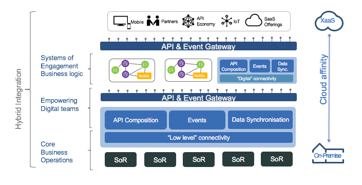
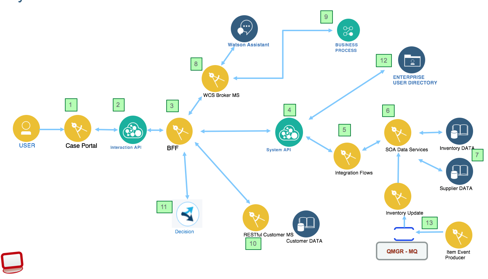
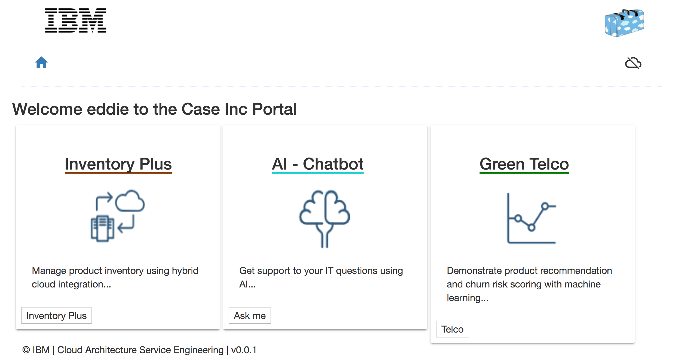

Hybrid Integration Reference Architecture
IT environments are becoming hybrid in nature; most businesses use cloud computing as part of their overall IT environment. While businesses continue to operate enterprise applications, processes, and systems of record on premises, they are rapidly developing cloud-native applications on cloud. The hybrid integration reference architecture describes an approach to connect components which are split across cloud and on-premises environments, or across public and private clouds -- even across different cloud providers.
This repository is also linked to the Event Driven Architecture repository where integration between microservices is supported by using event backbone and pub/sub integration pattern.
Target audiences
This solution implementation covers a lot of different and interesting subjects. If you are...
- an architect, you will get a deeper understanding of how all the components work together, and how to address API management, how to support cloud native polyglot applications and micro service while leveraging your existing investments in SOA and ESB pattern.
- a developer, you will get a broader view of the solution end to end and get existing starting code, and practices you may want to reuse during your future implementation. We focus on hybrid cloud and private cloud so some interesting areas like CI/CD in hybrid are covered. Test Driven Development with consumer driven contract testing.
- a project manager, you may understand all the artifacts to develop in an hybrid integration solution, and we may help in the future to do project estimation.
- a marketing person, you may want to google something else...
What you will learn
One of the goal of this implementation is to reflect what is commonly found in IT landscape in 2017, and provides recommendations on how to manage hybrid architecture with the cloud programming model by addressing non-functional requirements as scalability, security, monitoring and resiliency.
By studying the set of projects and articles linked to this top repository, you will learn:
- How to develop a SOAP app in Java using JPA, JAXWS deployed on WebSphere Liberty
- How to develop gateway message flow with IBM Integration Bus
- How to define API product with API Connect, and use secure communication with TLS for backend APIs
- How to set up secure connection from IBM Cloud public to on-premise service using IBM Secure Gateway
- How to develop a Single Page Application with Angular 6 using a Test Driven Development approach with nodejs/expressjs back end
- How to secure the web app with passport
- How to access existing LDAP service for user authentication
- How to perform CI/CD in hybrid world
- How to monitor all those components using Application Performance Monitoring
- How to deploy most of the components of the solution to IBM Cloud Private
- How to call BPM process from Watson Conversation (orchestration), and how to integrate chat user interface connected to Watson Conversation into BPM coach.
- How to support service mesh with kubernetes
- What is the journey story to adopt hybrid cloud
Introduction
In this architecture, existing applications are moved to the infrastructure as a service (IaaS) of cloud providers, new applications are built on the cloud as a platform as a service (PaaS), using pre-built cloud-based software as a service (SaaS) services.
The following diagram presents the high level view of the components involved in the hybrid integration reference architecture. For a deeper explanation of this architecture read this note
.
Each component may run on-premises, IaaS, PaaS or SaaS.
This current project provides a reference implementation for building and running an hybrid integration solution, using cloud native web application securely connected to an enterprise data source and SOA services running on on-premise servers. We want to illustrate how to leverage existing SOA / Traditional IT landscape with products such as ESB, BPM, rule engine, Java based web service applications or even event driven publishers. Remember that the core purpose of SOA was to expose data and functions buried in systems of record over well-formed, simple-to-use, synchronous interfaces such as web services. In the longer term the brown compute will support the multiple integration patterns as presented in the figure below:

Application Overview
As an hybrid cloud solution implementation the set of projects of this solution cover different functional requirements:
- A web based portal to integrate internal applications for internal users.
- One of the function is to manage a simple computer product inventory, with warehouse and suppliers.
- A second feature is to implement a IT support chat bot so internal user can ask IT support questions and get response quickly, reducing the cost of operation of the support team.
- Support customer management, buyer of the telco products, used to support Analytics and machine learning
- Product recommendations based on business rules
System context
As architect we need to develop a system context, so the following diagram illustrates the logical components involved in the current solution, with the numbered items for short explanation:

(the links below send you to the corresponding git repository where you can get more specific information and how tos.) 1. Web App "Case Portal" Portal web app (Angular 4) exposes a set of capabilities to internal users for inventory management, chatbots... 1. Interaction APIs exposes API products for public WebApp consumptions. Those APIs support specific resources needed by user interface app and the channels they serve. 1. Back End For Front End to support business logic of the web app, and simple integration of RESTful services. This is currently the server part of the web app). As of now this BFF (Back-end For Front-end pattern) is done with nodejs app serving the Angular single page application. BFF pattern is still prevalent for mobile applications and single-page web applications. In this pattern, APIs are created specifically for the front-end application and perfectly suited to its needs with rationalized data models, ideal granularity of operations, specialized security models, and more. 1. System API to define backend service API products (inventory APIs), and customer APIs, used by multiple consumers. 1. Mediation flow deployed on Integration Bus to connect to back end systems and SOA services, and do interfaces mapping and mediation flows. 1. Data SOA, Java WS service to expose a data access layer on top of relational item, inventory, supplier database 1. Db2 deployment of the Inventory and Supplier database. 1. Watson conversation broker micro service to facade and implement orchestration and business logic for chatbots using Watson Conversation IBM Cloud service. 1. Supplier on boarding process, deployed as human centric process on IBM BPM on Cloud and triggered by Watson Conversation chatbot, or integration chat bot into BPM coach 1. Customer management for analytics micro services to support RESTful API. 1. Decision engine to automate business rules execution and Management for product recommendation in the context of user moving in different location with how to install ODM helm chart on IBM Cloud Private 1. LDAP for user Management to centralize authentication use cases. 1. Inventory update from the warehouse using IBM MQ, event producer and MDB deployed on WebSphere.
We propose to extend the IT chatbot using Event processing for application state management to combine Decision Insight with MQ message and chat bot to manage inventory plus state.
We have also other repositories to address... * Testing This repository includes a set of test cases to do component testing, functional testing and integration tests.
User interface
To demonstrate the set of features of this solution , a front end application, representing an internal portal is used to plug and play the different use cases. There is a login mechanism connected to a directory service (LDAP)

This front end application is an extension of the "CASE.inc" retail store introduced in cloud native solution or "Blue compute" which manages old computers, extended with IT support chat bot and other goodies.
Further Readings
We are presenting Hybrid Cloud Integration body of knowledge in this article. We are compiling a ICP FAQ with kubernetes references.